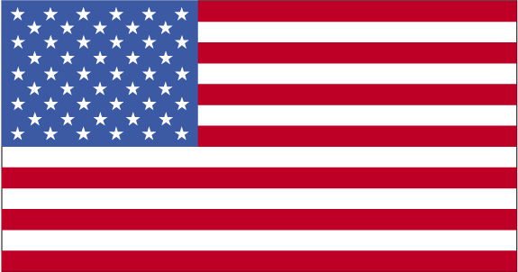
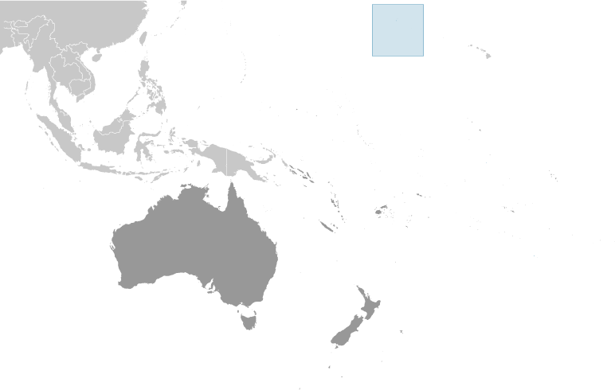
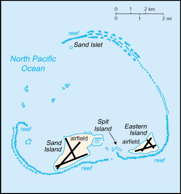

Australia-Oceania :: MIDWAY ISLANDS
Introduction :: MIDWAY ISLANDS
-
The US took formal possession of the islands in 1867. The laying of the trans-Pacific cable, which passed through the islands, brought the first residents in 1903. Between 1935 and 1947, Midway was used as a refueling stop for trans-Pacific flights. The US naval victory over a Japanese fleet off Midway in 1942 was one of the turning points of World War II. The islands continued to serve as a naval station until closed in 1993. Today the islands are a US National Wildlife Refuge. From 1996 to 2002 and 2008 to 2012 the refuge was open to the public, but it is now closed.
Geography :: MIDWAY ISLANDS
-
Oceania, atoll in the North Pacific Ocean, about one-third of the way from Honolulu to Tokyo28 12 N, 177 22 WOceaniatotal: 6.2 sq kmland: 6.2 sq kmwater: 0 sq kmnote: includes Eastern Island, Sand Island, and Spit Islandabout nine times the size of The Mall in Washington, DC0 km15 kmterritorial sea: 12 nmexclusive economic zone: 200 nmsubtropical; moderated by prevailing easterly windslow, nearly flatmean elevation: NAelevation extremes: lowest point: Pacific Ocean 0 mhighest point: water tower hill on Sand Island 15 mwildlife, terrestrial and aquaticagricultural land: 0%arable land 0%; permanent crops 0%; permanent pasture 0%forest: 0%other: 100% (2011 est.)0 sq km (2012)tropical stormssmall plastic ocean debris mistaken for fish or squid by birds is fed to fledglings resulting in starvation; fishing nets that wash ashore entangle wildlife resulting in starvation or strangulationthe coral atoll is managed as a national wildlife refuge and was open to the public for ecotourism from 1996 to 2002 and then again from 2008 to 2012; in 2000, the lands and waters of the Midway National Wildlife Refuge were also designated as the Battle of Midway National Monument; Henderson Airfield on Sand Island continues to serve as an emergency landing field for military and civilian aircraft transiting the Pacific Ocean (2016)
People and Society :: MIDWAY ISLANDS
-
no indigenous inhabitants; approximately 40 people make up the staff of US Fish and Wildlife Service and their services contractor living at the atoll (July 2014 est.)
Government :: MIDWAY ISLANDS
-
conventional long form: noneconventional short form: Midway Islandsetymology: originally named the Middlebrook Islands after the US captain who discovered them in 1859; the name became Midway later in the 19th century and reflects the islands' position in the North Pacific Ocean roughly equidistant between North America and Asiaunincorporated territory of the US; formerly administered from Washington, DC, by the US Navy; on 31 October 1996, through a presidential executive order, the jurisdiction and control of the atoll was transferred to the Fish and Wildlife Service of the US Department of the Interior as part of the National Wildlife Refuge Systemthe laws of the US, where applicable, applysee United Statesthe flag of the US is used
Transportation :: MIDWAY ISLANDS
-
total: 21,524 to 2,437 m: 2 (2013)total: 1914 to 1,523 m: 1 (2013)major seaport(s): Sand IslandHenderson Field on Sand Island serves as an emergency landing site for aircraft crossing the Pacific Ocean
Military and Security :: MIDWAY ISLANDS
-
defense is the responsibility of the US
Transnational Issues :: MIDWAY ISLANDS
-
none